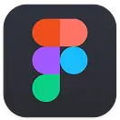
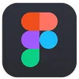

PROJEKT NO. 2
ZeroBuzz Brew

Min løsning bestod af en responsiv hjemmeside, som er optimeret til telefon såvel som desktop.
Case
Fik til opgave, at udarbejde en digital løsning for det fiktive mikrobryggeri ZeroBuzz Brew, som
udelukkende tilbyder alkoholfri øl. Dertil skulle vi udarbejde en visuel- og brand identitet, med
henblik i at appellere til målgruppen 18-35 år samt bryde stigmatisering om alkoholfri øl.
Værktøjer
 
